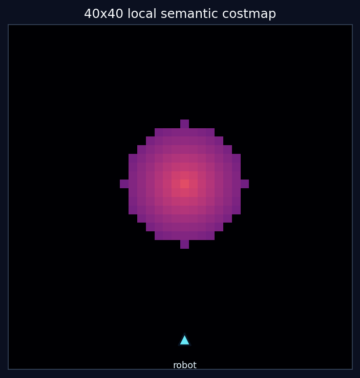
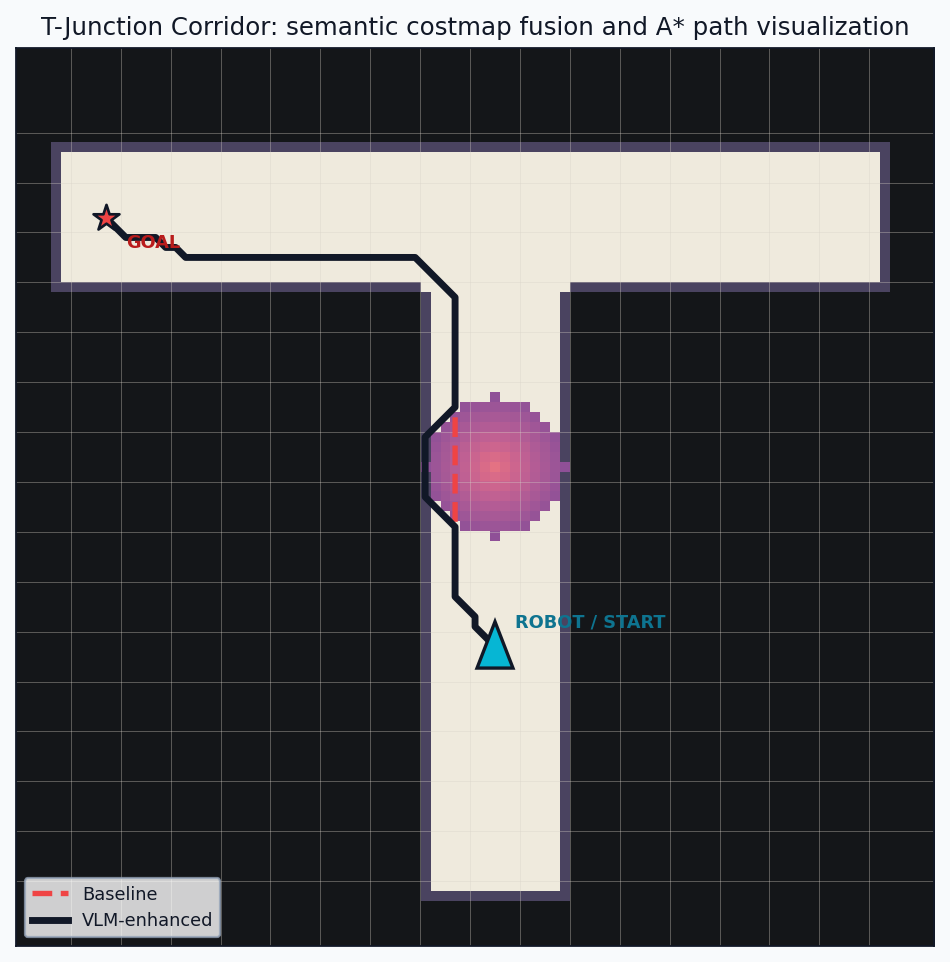

Robot Camera Frame

A local VLM module interprets robot camera frames, combines them with mocked navigation context, and contributes semantic costs for safer social navigation.
The VLM does not control the robot. It converts visual and navigation context into semantic costmap updates. A deterministic planner still makes the final path decision.
A standing person is possibly moving, so the demo adds a cautious circular personal-space zone.



